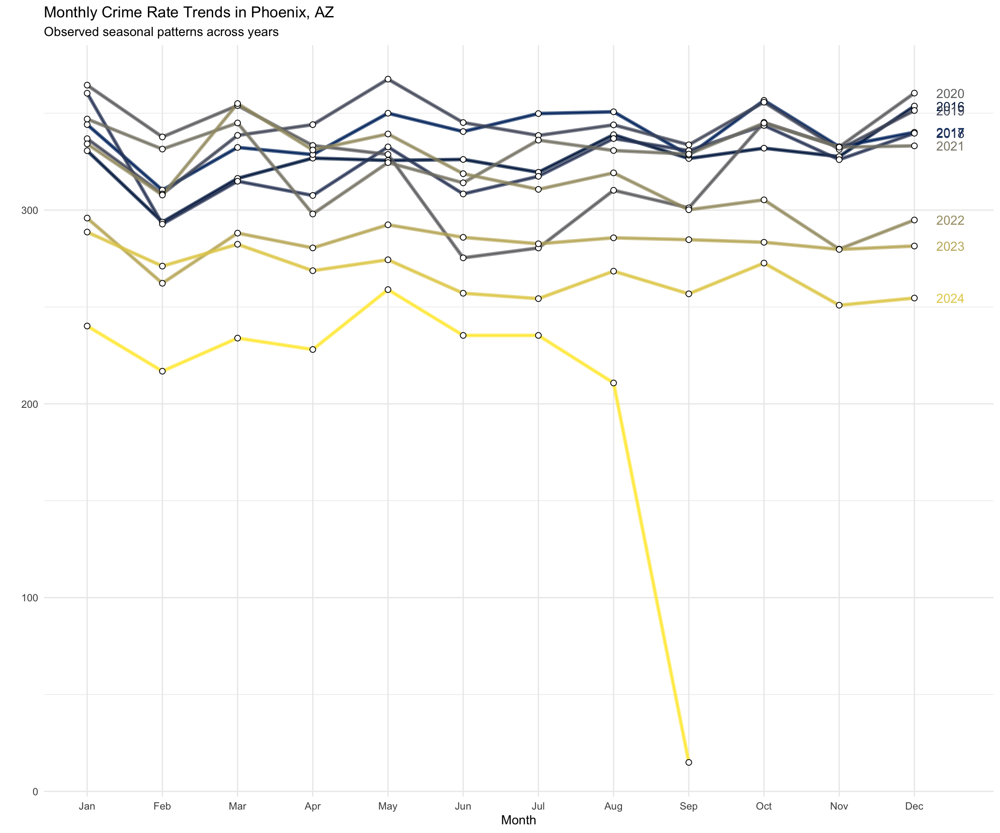
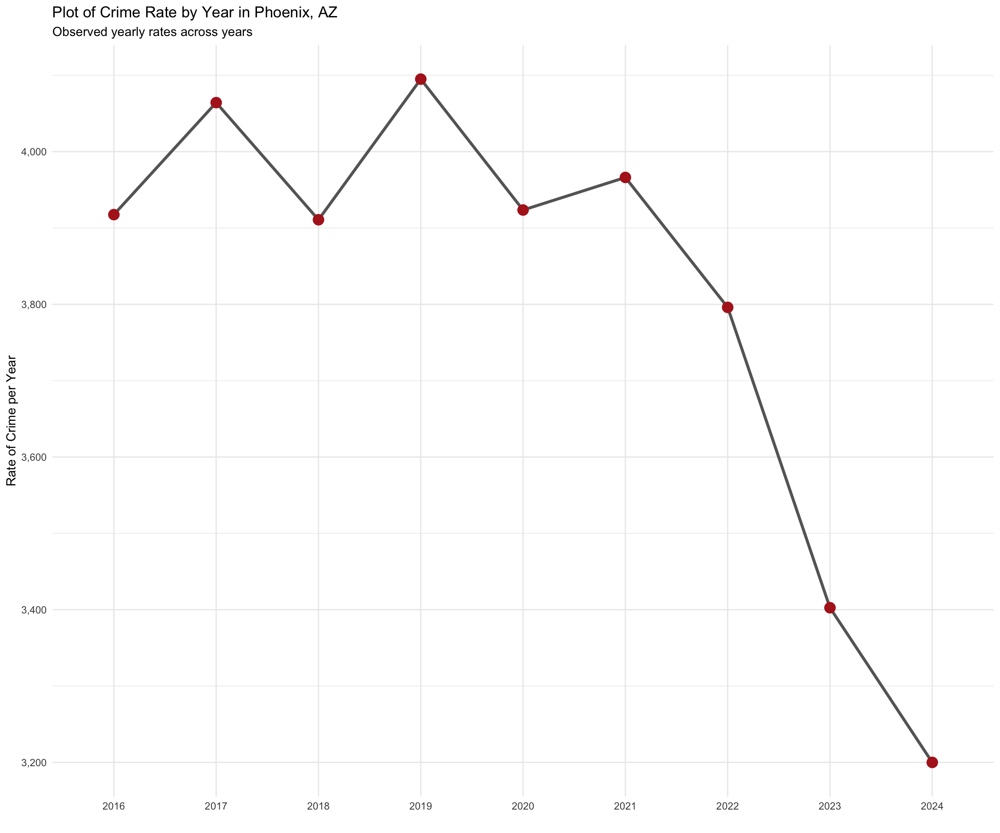
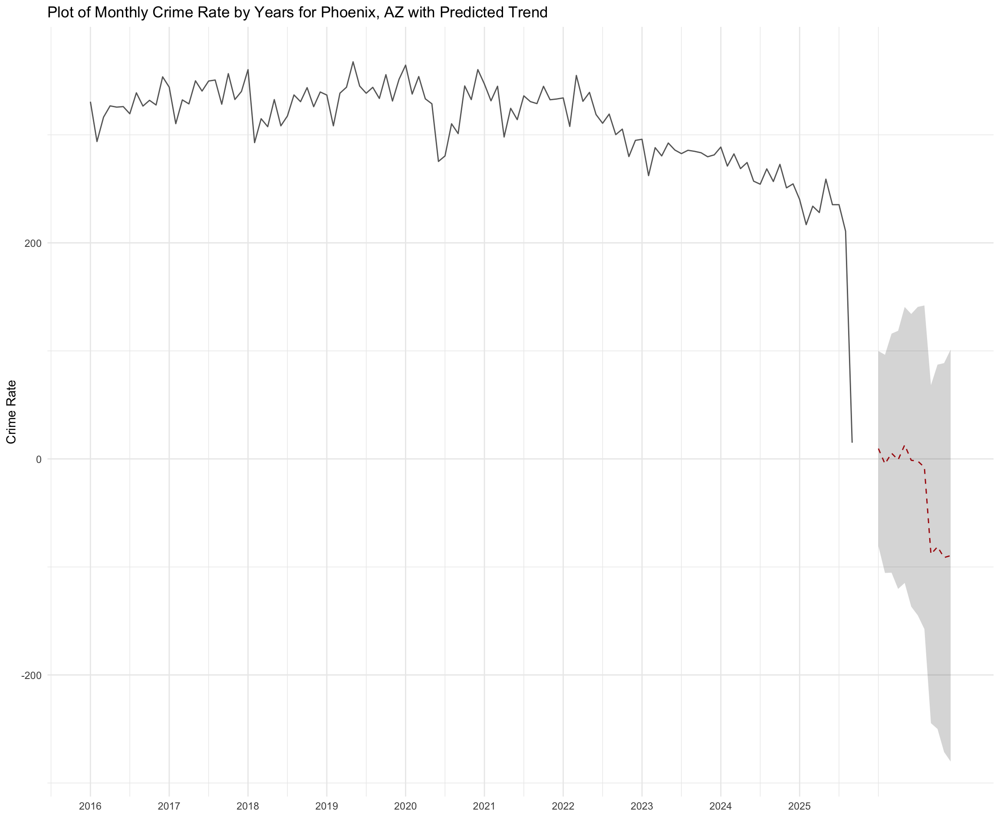

What is going on with crime in Phoenix?
14 February, 2025
If we want to know what is going on with crime in Phoenix, we can take a look at the Crime Data from the data portal. This file contains incidents reported to the Phoenix Police Department. The city updates the file at 11am every day and it contains data beginning November 2015 up to 7 days before the posting date. With these data we can examine basic trends in crime in Phoenix.
This page will focus on the following questions:
- What is the daily trend in crime?
- What is the monthly trend in crime?
- What is the yearly trend in crime?
- What is the monthly and yearly trends in types of crime?
To examine these questions, we will use data that has pre-processed from the data portal. For details, see the Pre-Processing Crime Data for Phoenix page.
Setup
To get going, we will load all the libraries we need. The code to generate everything you see here is hidden (to reduce clutter). But, if you want to see “how we get there”, just click the “Show” button on the right.
Next, we will load the data. These files are available in the data folder for the repository.
# clear workspace
rm( list = ls() )
# load libraries
library( dplyr ) # used for wrangling the data
library( tidyr ) # used for wrangling the data
library( ggplot2 ) # for plotting
library( scales ) # for formatting the text
library( forecast ) # for working with time series data
library( here ) # for referencing the local directory
library( viridis ) # for some coloring used in the plots
# define the objects
crimeData <- readRDS( here( "data/crimeData.rds" ) )
crimesByDay <- readRDS( here( "data/crimesByDay.rds" ) )
crimesByMonth <- readRDS( here( "data/crimesByMonth.rds" ) )
crimesByYear <- readRDS( here( "data/crimesByYear.rds" ) )
crimeRatesMonth <- readRDS( here( "data/crimeRatesMonth.rds" ) )
crimeRatesYear <- readRDS( here( "data/crimeRatesYear.rds" ) )
crimeRatesMonthType <- readRDS( here( "data/crimeRatesMonthType.rds" ) )Daily Trends in Crime from 2016 to Present
Let’s pull the most recent data for crime incidents from the site.
The data are reported as UCR crime classifications and have geographic information (block address, zip) as well as the date and time of the incident. As of February, 2025, there were 567,280 crime incidents with complete data from 11/2015 to within a week of the current date.
Let’s start by looking at the daily counts of crime from when the data are first available (i.e. November 2015) and look at the trend up to the current date. In the analyses below, we will drop the most recent month as the data are not complete for that month.
crimesByDay %>%
ggplot( aes( days, counts ) ) +
geom_line( color = "grey80" ) +
geom_point( alpha = 1/5, color = "black" ) +
labs( x = "", y = "Counts of Crime per Day" ) +
ggtitle( "Daily Crime Counts in Phoenix, AZ" ) +
geom_smooth( color = "#751913", span = 0.2 ) +
scale_y_continuous( label = comma ) +
theme_minimal() 
Rates of Crime
The daily count view is useful, but it might help if we make two changes:
First, we should break it down by year and month. This adjustment corrects for the seasonality of crime. One way to show this seasonal variation in crime incidents is to plot the monthly incidents for each year. Note that for 2025, the line stops the month before February, as that is the last month of complete data from the portal.
Second, we should adjust the counts to be rates of incidents of crime. This will adjust for differences in the population of Phoenix from 2016-2025. The crime incident rate is calculated as the count of crimes divided by the population size, then multiplied by 100,000. This then tells us how many incidents of crime occur per 100,000 people in the population. The Pre-Processing Crime Data for Phoenix page goes into detail on how these rates are calculated.
Rates of Crime by Month from 2016 to Present
# create a time series object for plotting
monthlyCrimeRateByYear <- ts(
matrix( as.matrix( crimeRatesMonth ), ncol = 1 ),
start=c( 2016, 1 ),
end=c( as.numeric( tail( names( crimeRatesMonth ), n=1 ) ), 12 ), frequency=12
)
# render the plot
monthlyCrimeRateByYear %>%
ggseasonplot(
year.labels = TRUE,
continuous = FALSE,
col = viridis( n = dim(crimeRatesMonth)[2], option = "cividis" ) ) +
scale_y_continuous( labels = comma ) +
geom_line( size = 1.5, alpha = 0.7 ) +
geom_point( size = 2, shape = 21, fill = "white", color = "black" ) +
ggtitle(
"Monthly Crime Rate Trends in Phoenix, AZ",
subtitle = "Observed seasonal patterns across years" ) +
theme_minimal()
The plot showing the monthly rates by year helps us visualize the data better. Note that the current year, 2025, is missing a label because the year is incomplete.
Rates of Crime by Year from 2016 to Present
crimeRatesYear %>%
# drop the current year because it distorts the graph
filter( year != as.numeric( format( Sys.Date(), format="%Y" ) ) ) %>%
ggplot( aes( year, rates, group = 1 ) ) +
geom_line( color = "grey40", size = 1.2 ) +
geom_point( color = "firebrick", size = 4 ) +
labs( x = "", y = "Rate of Crime per Year" ) +
ggtitle( "Plot of Crime Rate by Year in Phoenix, AZ" ,
subtitle = "Observed yearly rates across years" ) +
scale_y_continuous( label = comma ) +
theme_minimal() 
Rates of Crime by Year from 2016 to Present with Predicted Trend
# Fit an ARIMA model with seasonal components
fit <- auto.arima(
monthlyCrimeRateByYear,
seasonal = TRUE,
stepwise = FALSE,
approximation = FALSE
)
# Forecast the next 12 months
forecasted_values <- forecast( fit, h = 12 )
# Convert time series to a data frame for ggplot
actual_data <- data.frame(
ds = time( monthlyCrimeRateByYear ),
y = as.numeric( monthlyCrimeRateByYear )
)
forecast_data <- data.frame(
ds = time( forecasted_values$mean ),
yhat = as.numeric( forecasted_values$mean ),
lower = as.numeric( forecasted_values$lower[,2] ),
upper = as.numeric( forecasted_values$upper[,2] )
)
# Plot the actual data and forecast using ggplot2
ggplot() +
geom_line( data = actual_data, aes(x = ds, y = y), color = "grey40") + # Actual data
geom_line( data = forecast_data, aes(x = ds, y = yhat), color = "#c41104", linetype = "dashed") + # Forecasted data
geom_ribbon(data = forecast_data, aes(x = ds, ymin = lower, ymax = upper), alpha = 0.2) + # Confidence interval
labs( title = "Plot of Monthly Crime Rate by Years for Phoenix, AZ with Predicted Trend",
x = "Date",
y = "Crime Count" ) +
theme_minimal()
Types of Crime
Rates of Crime by Type of Crime and Month from 2016 to Present
crimeRatesMonthType %>%
ggplot( aes( month, rates, group = 1 ) ) +
geom_line( color = "grey40" ) +
geom_point( alpha = 2/5, color = "#751913" ) +
facet_grid( crime.type ~ year, scales="free" ) +
theme( axis.text.x=element_blank(),
strip.text.x = element_text( size = 15 ),
strip.text.y = element_text( size = 12 ) ) +
xlab( "Month" )Back to Open Criminology Phoenix page
Please report any needed corrections to the Issues page. Thanks!